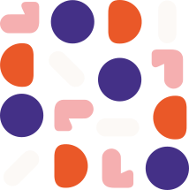

Most organisations are now doing something with AI. The harder question boards are starting to ask is whether any of it is changing the economics of the business — and whether leadership can prove it.
Management teams are rolling out Copilot, ChatGPT or Claude. Beyond engineering, functional areas are experimenting with use cases in operations and finance, marketing and sales. Vendors are adding AI features to existing systems. AI adoption has moved from curiosity to expectation.
Boards and leadership teams are asking for updates, and most are grappling with the same tension: the opportunity feels real, the risk feels underappreciated, costs are escalating and ROI is proving hard to pin down.
For leaders and management teams, this creates a specific problem. The question is no longer whether the business is doing something with AI. The harder question is whether any of it is changing the economics of the business — whether that's margin, cost-to-serve, decision quality, defensibility, or risk/resilience.
If the answer is murky, and for many it still is, the business has AI adoption without measurable AI advantage. And those are not the same thing.
AI adoption has moved fast, but the evidence of its impact has not kept pace. BCG's work on AI-empowered value creation points to the same pattern across companies of every kind: AI use is broad, but enterprise-level financial impact remains much less common. The difference isn't access to better models — stronger performers redesign workflows around AI rather than treat it as a standalone productivity tool.
This is consistent with organisations CTO Labs works with. Leadership teams are seeing AI activity in every function, but activity alone doesn't answer the operating question: which initiatives are actually improving the economics, scalability or defensibility of the business.
For most of the last three years, the cost of not having AI evidence was low. Pilots could fail quietly — the stakes were contained. That's shifting. AI is moving out of sandboxes and into the work itself, including decisions, customer interactions, regulated workflows, and operational controls. Once it's there, the question changes. It's no longer whether the business is doing something with AI. It's whether the business can account for and quantify what it's actually doing.
That distinction matters on several counts. Time and budgets are finite. We're in a period where the technology is moving fast enough that backing the wrong initiatives may be a strategic cost.
A management team may report regular generative AI usage. A function may describe efficiency gains. Each of these may be directionally positive — none proves strategic advantage.
Adoption is not the same as productivity. Productivity is not the same as margin. Margin does not improve unless the AI intervention changes a value mechanism the business can actually measure, such as a workflow, a customer interaction, or a revenue lever.
This is where many AI initiatives stall:
A support team deploys AI response drafting, but average handling time, first-contact resolution and cost-to-serve remain unchanged.
An engineering team generates code faster, but defect rates, release frequency and production incidents do not improve.
A finance team drafts commentary faster, but month-end close quality and management decision latency remain unchanged.
A product team adds an AI feature, but customer adoption, retention or willingness to pay does not improve.
In each case, the capability may work. The business hasn't converted it into a measurable change in performance.
Work moves faster, requires fewer handoffs, produces more consistent outputs or reduces rework.
Better signals reach the right people earlier, improving speed, quality or confidence.
Manual effort, review time, exception handling or cost-to-serve reduces in a measurable way.
Conversion, retention, pricing, sales productivity, customer experience or product value improves.
Better controls, monitoring, consistency or traceability reduce operational, compliance or delivery risk.
A process that previously required specialist human effort can scale without equivalent headcount growth.
If nothing has moved — no workflow, no decision quality, no customer outcome, no cost or revenue lever — the benefit will usually stay local. Individual productivity may improve but the enterprise value may not.
The reverse test is also useful. As AI becomes embedded in day-to-day operations, leaders need to know how much the business now depends on it. A useful test of genuine value is what would break, slow down or become more expensive if the AI intervention were switched off. CTO Labs' John Broadhead explores this angle in more depth in his recent piece on Healthcare AI Diligence.
A practical way to assess AI maturity is to separate weak signals from better evidence. Click a rung to see what separates activity from investment-grade proof.
Most organisations can point to activity. Fewer can demonstrate adoption. Fewer still can evidence a clear value mechanism and measurable operating impact.
The more useful question isn't "are we doing AI" — it's whether AI has moved a metric that actually matters, and whether there's evidence to show it. For management teams, the key question is how far up the ladder the company has progressed.
An AI diagnostic should not start with a tooling inventory. It should start with where the business is trying to build strategic advantage. The relevant questions are:
Which business outcomes matter most over the current planning horizon?
Which workflows, decisions, customer journeys, product capabilities or risk controls materially influence those levers?
Where are decisions slow, manual, inconsistent or poorly supported?
Where does fragmented data create latency, rework or poor visibility?
Where could AI improve throughput, quality, cost-to-serve, conversion, retention, decision confidence, risk control or scalability?
What metric would prove the opportunity is worth scaling?
This changes the conversation.
That question is more commercially useful. It also prevents teams from over-prioritising attractive demos and under-prioritising less visible opportunities where material value may sit.
A credible AI initiative that builds strategic advantage usually has five characteristics.
Before claiming improvement, the business understands the current metric — process time, decision quality, cost, error rate, conversion rate or throughput.
If a process is mostly deterministic, rules may be cheaper, simpler and more explainable. AI earns its place where the work requires judgement or interpretation of unstructured information.
Not "apply AI to finance," but something precise: reduce reporting commentary time, improve renewal risk identification, shorten support resolution time.
AI should not replace accountability — it should improve the quality, speed or consistency of the artefact a human reviews, approves or acts on.
Cycle time, conversion, cost-to-serve, throughput, gross margin or delivery risk — whichever lever the initiative was designed to move.
For most companies, AI strategy should not start as a generic transformation exercise. It should start as a value diagnostic — a structured way to understand where AI should be applied, and why. That value diagnostic should answer five questions:
Where is AI activity already happening across the business?
Which initiatives are linked to material sources of strategic advantage?
Which value mechanisms need to change for value to be captured?
What evidence exists today, and what is still anecdotal?
Which thin-slice opportunities are worth validating first?
The output should not be a long AI roadmap. It should be a clear view of where AI can create measurable value, how that value would be evidenced, where the constraints sit, and which opportunities deserve management attention right now.
The question is no longer whether the business is using AI. The question is now whether AI is changing the economics of the business — and whether leadership can prove it.
For the latest thinking, or to discuss how the AI Maturity Ladder applies to your organisation, get in touch with the CTO Labs team.